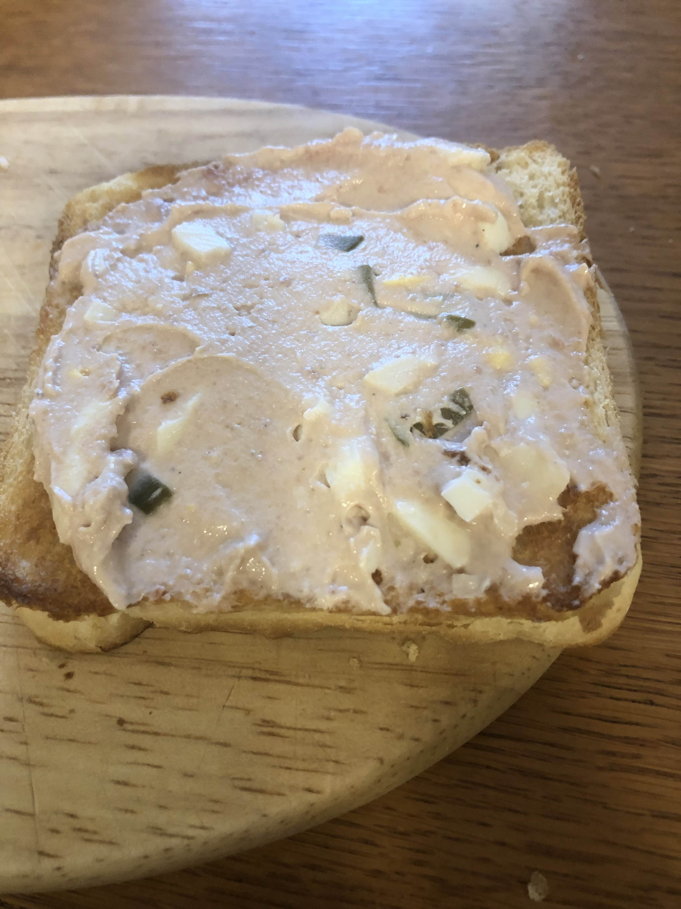

Paštiková pomazánka
Věci
- Miska
- Kráječ na vejce
- Mixér (malý)
- Vidlička (na promíchání)
Suroviny
- 1x paštika májka
- 180g lučinu
- 2 vejce velikosti L
- pepř (podle chuti)
Postup
- Necháme vařit vajíčka a až začne vřít voda nastavíme 10 minut
- Do misky dáme lučinu a paštiku
- 1 hermelín nakrájíme a rozemeleme a 1 hermelín nakrájíme na kostičky
- Promícháme lučinu s hermelínem
- Ochladíme a oloupeme vejce
- Vezmeme si kráječ na vejce
- Z vajec uděláme malé čtverečky
- Opatrně promícháme
- Ochutnáme a kdyžtak doplníme pepřem